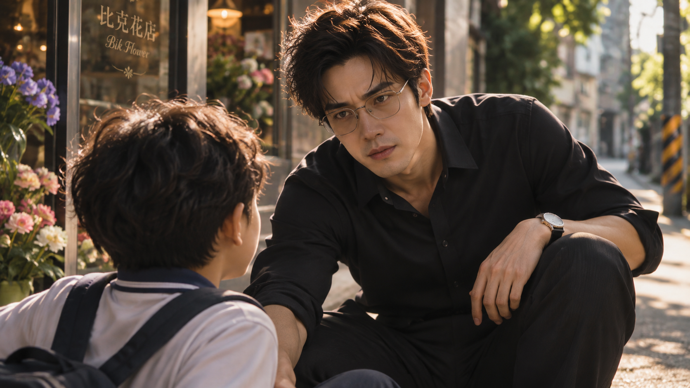
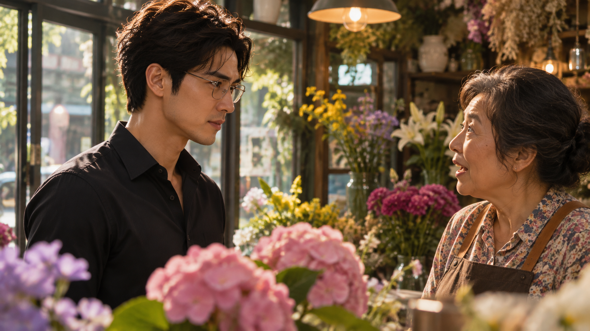
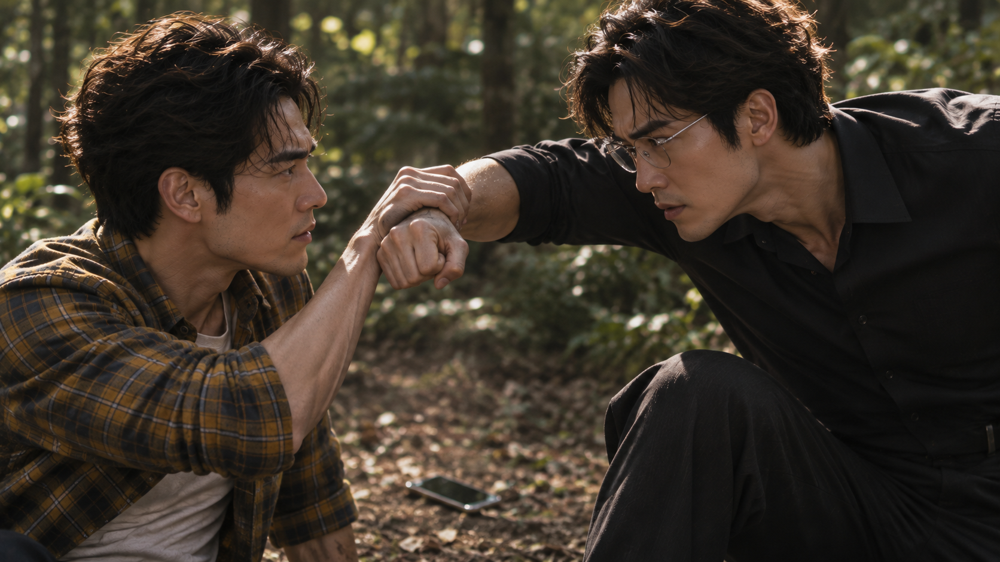
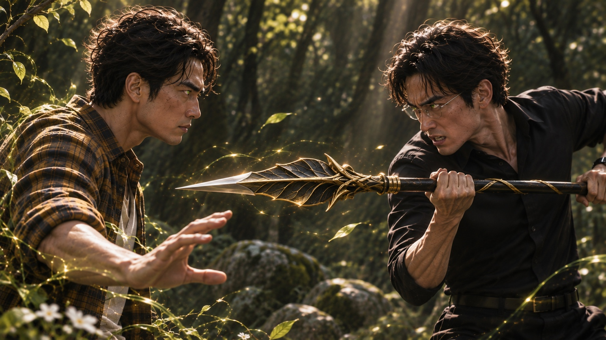
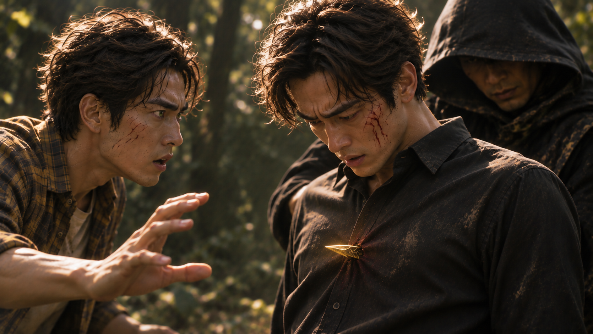
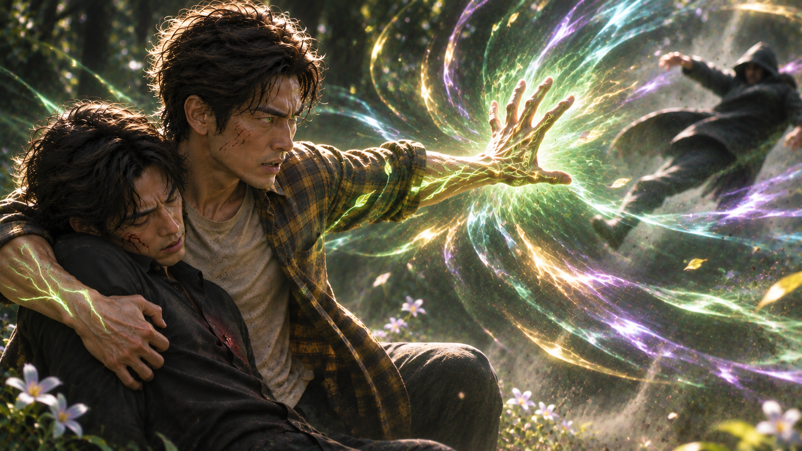
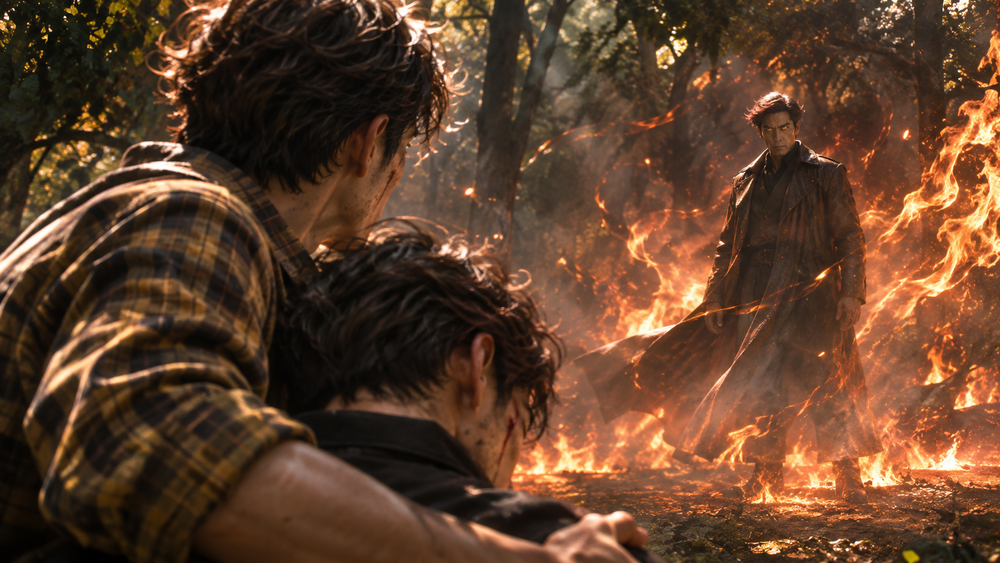

WHITE MAGIC ART STUDIO
第十一章
兄與弟
桃園｜比克花店
「謝謝光臨！」
碧雲熟練地將客人訂製的花束包裝妥當，微笑著完成結帳。
櫃檯旁，昱鎧正坐在高腳椅上，開心地吃著碧雲特地為他準備的小蛋糕。
他還穿著學校制服，書包隨意掛在椅背上，顯然才剛放學不久。
「怎麼樣，小鎧？好吃嗎？」
碧雲倚著櫃檯，笑著問道。
「超級好吃！」
昱鎧滿足地點頭，嘴角還沾著一點奶油。
碧雲看著他，忽然露出討好的笑容。
「那麼……能不能看在蛋糕的份上，幫阿姨一個忙？」
昱鎧抬起頭。
「又要換錢嗎？」
「哎呀！真不愧是你！」碧雲笑了出來，「我需要一百個十塊錢，能不能幫我跑一趟？」
「當然可以啊！」
昱鎧放下叉子，拍了拍胸口。
「碧雲阿姨，妳也太見外了吧？不就是去隔壁超商換錢嗎？我都幫妳換過好多次了！」
他咧嘴一笑。
「不用看在蛋糕的份上，我也會幫忙啦！」
「哎唷，你這小子，最近越來越會說話了！」
碧雲忍不住揉了揉他的頭，從收銀機裡拿出一張千元鈔票。
「來，一千塊。快去快回喔！」
「遵命！」
昱鎧接過鈔票，從椅子上跳下來，興沖沖地跑出花店。
午後的陽光灑落街道。
他沿著熟悉的人行道往前走，正準備在巷口轉彎時，卻一個不留神，迎面撞上了某個人。
「哎唷！」
昱鎧踉蹌了一步。
「抱歉！抱歉！」
「沒事。」
一道沉穩的男聲從頭頂傳來。
「小朋友，你還好嗎？」

昱鎧抬起頭。
站在面前的是一名戴著細框眼鏡的男子，衣著整齊，神情雖然有些嚴肅，說話卻相當溫和。
「我沒事！真的很抱歉！」
男子看了他一眼，微微點頭。
「沒關係。正好，我想跟你問個路。」
「問路？」
「請問，比克花店在哪裡？」
「喔！就在那邊！」
昱鎧立刻轉身，指向身後不遠處的招牌。
「直走就看得到了！」
「原來這麼近。」
男子順著他指的方向望去。
「謝謝你。」
「不客氣！」
男子微微一笑，便朝花店走去。
昱鎧望著他的背影，不知為何，忽然覺得有些熟悉。
尤其是那雙眼睛……
好像在哪裡見過。
他歪著頭想了想，卻始終想不起來。
「算了，先去換錢！」
昱鎧轉身跑向超商。
他並不知道，剛才與自己擦身而過的男人，正是他從未謀面的叔叔——梁景毅。
比克花店
「歡迎光臨！」
玻璃門上的風鈴輕輕響起。
碧雲抬起頭，看見一名戴著眼鏡的男子走進店裡。
「您好，請問需要什麼花呢？」
景毅沒有立刻回答。
他環顧四周。
店內擺滿了各式花卉，從尋常的玫瑰、百合，到幾種連他都不常見的特殊品種。
那些花朵的色澤與生命力，讓他隱約察覺到一股熟悉的氣息。
那是木之聖術留下的痕跡。
看來，自己確實找對地方了。
「不好意思。」
景毅收回視線。
「我不是來買花的。」
「咦？」
「我是來找人的。請問這裡有一位叫梁景皓的人嗎？」
碧雲愣了一下。
「景皓？」
「對。」
「他現在不在耶……請問你是？」
景毅稍稍停頓。
「我是他弟弟。」
「……什麼？」
碧雲睜大眼睛。
「你是景皓的弟弟？！」
景毅點頭。
下一秒，碧雲便驚喜地走出櫃檯。
「天啊！終於見到你了！」
她仔細端詳景毅的臉。
「難怪我剛剛就覺得有點眼熟！你們兄弟真的有像耶！而且你長得也太帥了吧！」
景毅有些不習慣這樣的熱情，只能禮貌地笑了笑。

「謝謝。」
「景皓有跟我提過他有個弟弟，只是沒想到今天會突然見到你！」
碧雲的語氣漸漸柔和下來。
「你不知道，你哥這幾年其實過得很辛苦……」
景毅的笑容微微一頓。
「……是嗎？」
「對啊，他——」
「不好意思。」
景毅打斷她。
「我今天有很重要的事情要找他。請問，他現在在哪裡？」
碧雲看了看時間。
「這個時間啊……他應該去石門山了。」
「石門山？」
「嗯。他每週差不多這個時候，都會去那裡找一些特殊的花種，偶爾也會帶種子回來培育。」
她想了想。
「不過他通常要到傍晚才會回來。你要不要先坐一下？還是晚點再過來？」
「不用了。」
景毅回答得很快。
碧雲微微一愣。
他似乎也察覺自己的語氣有些急切，於是放緩聲音。
「抱歉。我們兄弟已經十年沒見了，有些事情，我想親自跟他談談。」
「這樣啊……」
碧雲望著他。
沉默片刻後，才從櫃檯抽出一張便條紙。
「那個地方其實算是我們花店的小祕密。」
她一邊寫下位置，一邊說道：
「照理說，我不能隨便告訴別人。不過……既然你是他弟弟，我想應該沒關係吧。」
景毅接過紙條。
「謝謝妳。」
「不會啦！」
碧雲露出笑容。
「只是你們這麼久沒見了，見面記得好好說話喔。」
景毅看著手中的地址。
片刻後，他輕輕點頭。
「……我會的。」
他轉身離開。
風鈴再次響起。
碧雲望著他的背影，忍不住感嘆：
「真不愧是兄弟……都長得這麼帥。」
她笑著搖了搖頭，重新走回櫃檯。
此時的她，還不知道自己剛才交出去的那張紙條，將會帶來什麼。
石門山｜午後
午後的陽光穿過樹冠，在林間灑下斑駁的光影。
遠離市區的山林裡，空氣帶著泥土與草木的氣味。
景皓蹲在一片低矮的植物旁，仔細檢查花朵與種子的生長狀況。
他從背包裡拿出小袋子，將幾顆成熟的種子收好。
做完這些，他才站起身，伸個懶腰。
微風拂過樹梢。
景皓抬頭望向眼前的大樹，將掌心輕輕貼上樹幹。
粗糙的樹皮下，生命的氣息緩緩流動。
那份平靜，讓他不自覺放鬆了肩膀。
「希望這裡……能一直保持這個樣子。」
他低聲說道。
就在這時——
叮鈴鈴！
手機鈴聲突然響起。
景皓拿出手機。
「喂？碧雲姐，怎麼了？」
「景皓！」
電話另一頭的聲音聽起來格外興奮。
「怎麼樣？有沒有看到驚喜？」
「……驚喜？」
景皓皺起眉頭。
「什麼驚喜？」
「你還沒遇到嗎？」
「遇到誰？」
「哎唷，就是——」
景皓正想追問，目光卻忽然停在遠處。
林間小徑旁，停著一輛陌生的轎車。
他記得自己來的時候，那裡並沒有車。
而且，這條路平常幾乎不會有人特地開進來。
「……所以啊，我就跟他說你在哪裡了。」
電話裡，碧雲還在說話。
景皓的神情卻逐漸凝重。
「等一下。」
「嗯？」
「碧雲姐，妳剛剛說……妳跟誰說我在哪裡？」
「就是你弟弟啊！」
景皓的呼吸停了一瞬。
「……什麼？」
下一秒。
身後傳來急促的腳步聲。
景皓猛然回頭。
一道身影已經逼近眼前！
他幾乎是憑著本能側身，抬手擋住迎面而來的拳頭。
砰！
沉悶的碰撞聲在林間響起。
手機從手中滑落，掉進草叢。
「喂？景皓？」
電話另一頭的聲音戛然而止。
景皓抬起頭。
眼前的男人戴著熟悉的細框眼鏡。
他怔住了。

「……景毅？」
景毅望著他，嘴角浮現一抹冷笑。
「又見面了，梁景皓。」
景皓還沒來得及回答，另一拳便緊接著襲來。
他連忙抬臂格擋，向後退了兩步。
「等一下！你——」
「你還真愜意呢。」
景毅緩緩逼近。
「躲在這種地方，種種花、看看風景……」
他的聲音越來越低。
「過得很不錯嘛。」
景皓望著他。
那雙眼睛裡，有著他從未見過的情緒。
憤怒。
委屈。
還有某種幾乎要將理智吞沒的恨意。
「景毅，我們先談談。」
「談？」
景毅笑了一聲。
「我們還有什麼好談的？」
他再次逼近。
景皓不得不後退。
這不是久別重逢時的玩笑，也不是兄弟之間的普通爭執。
景毅是真的想傷害他。
景皓深吸一口氣。
「……看來，你是認真的。」
他的虹膜逐漸染上翠綠。
木瞳術——共感。
視線中的生命氣息彷彿變得更加清晰。
而從景毅身上傳來的情緒，幾乎讓他喘不過氣。
景皓咬緊牙關。
趁著拉開距離的空隙，他伸手拂過身旁的花朵。
花瓣微微發亮，隨即化為細小的光點，融入他的掌心。
一股熟悉的力量流遍四肢。
景皓腳下一蹬，迅速躍向側方。
周圍的枝葉隨之生長，沿著地面與樹幹延伸，試圖阻擋景毅的去路。
然而，景毅只是冷冷地看著那些逼近的枝條。
他的雙眼，同樣泛起翠綠光芒。
「哼……在森林對付木之聖術師是個下下策呢……」
景毅伸出右手。
掌心浮現一團光芒。
一柄黑金色長槍逐漸凝聚成形，槍刃帶著葉片般的輪廓。
他握住長槍，迅速揮開逼近的枝條。
被撥開的枝葉沿著原本的生長方向晃動，隨後重新垂落。
景皓趁機轉身。
他不想打。
至少，不想跟自己的弟弟打。
然而，身後忽然傳來一陣破風聲。
景皓猛然回頭。
那柄長槍已經逼近。

他勉強側身避開，左臂卻仍被槍刃擦過，整個人失去平衡，跌坐在地。
「嘶……！」
景皓捂住手臂，難以置信地望向景毅。
「梁景毅！你到底在做什麼？！」
景毅沒有回答。
他只是一步步走近。
「你知道嗎？」
他低聲說道。
「我曾經以為，只要你不在了，一切就會變得不一樣。」
景皓怔住。
「可是沒有。」
景毅抬起頭。
「就算你消失了十年，爸爸還是只想著你。」
他扯出一抹苦笑。
「我當上院長了。」
「……什麼？」
「茂陽醫院的新任院長。」
景毅看著他。
「我終於做到了。」
景皓張了張嘴。
「景毅，我——」
「可是他還是不滿足。」
景毅的聲音漸漸顫抖。
「我做了那麼多事，替他守著醫院，守著那個家……」
他停頓片刻。
「結果，他最放不下的人，還是你。」
景皓沉默了。
景毅握緊長槍。
「所以我一直在想……」
他抬起眼。
「是不是只要你徹底消失，我才能真正拿回屬於自己的人生？」
景皓望著弟弟。
那一瞬間，他忽然不知道該說什麼。
許多年前，他也曾經站在父親面前，因為不被理解而憤怒。
只是他從沒想過，自己離開後，弟弟竟然背負了這麼多。
「景毅……」
景皓緩緩站起身。
「我知道，我不是個好哥哥。」
他的聲音低沉。
「我離開了十年，沒有回去，也沒有好好面對你們。」
景毅冷冷地望著他。
「現在才說這些，不覺得太晚了嗎？」
「或許吧。」
景皓沒有否認。
「但我現在還不能倒在這裡。」
他抬起頭。
「因為有人在等我回家。」
景毅的眼神微微一變。
「……誰？」
景皓沒有回答。
他將雙掌按向地面。
周圍幾株花朵迅速失去光澤，花瓣化為細小的光點，沿著他的手臂流入體內。
花語的力量再次流轉。
景皓猛然起身，迅速逼近景毅。
砰！
景毅勉強偏過頭，仍被那股力量逼得退了半步。
他正要重新站穩，景皓已經再次逼近。
兩人短暫交手。
景皓不斷尋找突破的空隙，試圖將弟弟逼退，卻始終無法讓景毅停下來。
「夠了！景毅！」
「還沒完！」
景毅再次迎上前。
景皓下意識揮出一拳。
這一次，景毅沒能完全避開。
喀。
一聲細微的碎裂聲，在兩人之間響起。
景毅的眼鏡，裂了。
一道裂痕從鏡片邊緣延伸開來。
他踉蹌退了兩步。
歪斜的鏡框失去支撐，沿著鼻樑緩緩滑落。
景毅本能地伸出手。
卻沒能接住。
啪嗒。
眼鏡落在草地上。
景毅低頭望著它。
一時間，竟忘了繼續動作。
那副眼鏡……
從十九歲開始，他就一直戴著。
明明沒有近視。
明明不需要。
可是，他始終沒有拿下來。
因為每當望向鏡子，他總會想起那個人。
那雙與自己如此相似的眼睛。
那個無論他多麼努力，都無法從父親目光中取代的人。
梁景皓。
他曾經以為，只要戴上眼鏡，就能讓自己與哥哥變得不一樣。
可如今……
景毅緩緩抬起頭。
景皓就站在幾步之外。
兩人四目相對。
沒有鏡片阻隔。
景毅第一次如此清楚地看見哥哥的眼睛。
也彷彿看見了自己。
「……你到底憑什麼？」
景毅低聲開口。
景皓微微一怔。
「什麼？」
「憑什麼……」
景毅握緊拳頭。
「憑什麼你可以成為木翼？」
他抬起頭，眼底的情緒終於再也藏不住。
「從小到大，不管我多努力，不管考多少次第一名，聖術練得多好……」
他的聲音逐漸顫抖。
「只要你在，爸爸的眼睛就永遠看著你！」
景皓沉默了。
「你消失了十年！」
景毅終於提高聲音。
「整整十年！你什麼都沒做，卻還是能讓他每天惦記著你！」
他指向自己。
「而我呢？」
「我到底還要做到什麼程度，他才會像看著你那樣，看我一眼？」
景皓望著弟弟。
他終於明白，這場衝突從來不只是因為自己離家。
而是從很久以前開始，景毅便一直站在他的身後。
等待著父親回頭。
可他卻從未真正注意過。
微風吹過林間。
草地上，那副裂開的眼鏡靜靜躺著。
再也沒有人將它拾起。
景毅的雙眼再次泛起翠綠。
他猛然抬起手臂。
一層堅硬的木質防護沿著身前展開。
景皓試圖上前阻止，卻被那股力量逼退。
「景毅！冷靜一點！」
「你叫我怎麼冷靜？！」
景毅怒吼。
他伸出手，試圖再次召回術器。
黑金色長槍在掌心逐漸成形。
然而這一次，槍身的光芒卻開始不穩定地閃爍。
景皓注意到了。
「……景毅？」
原本凝實的術器，竟逐漸變得半透明。
「等一下！你的術器——」
景毅沒有理會。
他試圖握緊長槍，光芒卻在指間消散。
景毅怔了一瞬。
但那份錯愕，很快又被憤怒掩蓋。
他直接衝向景皓。
兩人失去平衡，跌倒在地。
景毅壓住哥哥，雙手緊緊扼住他的頸部。
「景毅……！」
景皓抓住他的手腕，努力讓自己保持冷靜。
「你聽我說！」
「閉嘴！」
「你的力量正在消失！」
景毅的動作微微一頓。
景皓望著他。
「聖術師的力量來自信仰。你現在被憤怒牽著走，連自己的術器都快消失了！」
「我叫你閉嘴！」
景毅咬緊牙關。
景皓卻沒有移開視線。
「你以為我不知道，你為什麼這麼恨我嗎？」
景毅怔住。
「你從小就很努力。」
景皓艱難地開口。
「我知道……你一直想讓爸爸看見你。」
景毅的手指微微顫抖。
「可是……」
景皓望著弟弟。
「你不需要靠打敗我，來證明自己。」
景毅的眼眶漸漸濕潤。
「你懂什麼……」
他的聲音忽然低了下來。
「你根本不懂。」
景皓沉默片刻。
「……也許吧。」
他緩緩說道。
「但有件事，我一直沒有告訴你。」
景毅看著他。
「什麼？」
景皓深吸一口氣。
「我早就不是木翼了。」
景毅的動作僵住。
「……你說什麼？」
「十年前，我親自向拉比請求，讓祂收回我的木之翼。」
景皓望向頭頂的樹冠。
陽光透過枝葉，落在他的臉上。
「而祂……真的回應了我的請求。」
景毅怔怔地看著他。
「你……」
他的聲音微微顫抖。
「你親眼見過拉比？」
景皓重新望向弟弟。
「嗯。」
景毅的眼神變了。
那份原本幾乎吞沒理智的憤怒，第一次出現了動搖。
「祂是真的……」
景毅沒有把話說完。
景皓輕輕點頭。
「一直都是，我想你也知道吧，身為術器使的你……」
林間忽然安靜下來。
只剩下風吹過樹葉的聲音。
過了片刻，景皓才再次開口。
「景毅。」
「……」
「我知道，我欠你們很多。」
他望著弟弟。
「但我現在還有一個孩子要照顧。」
景毅微微一怔。
「……孩子？」
「他叫昱鎧。」
景皓的聲音柔和了下來。
「他還在等我回家。」
景毅望著他，久久沒有說話。
他忽然想起剛才在花店外，撞上自己的那個男孩。
那雙莫名熟悉的眼睛。
原來……
景毅的手指漸漸鬆開。
景皓終於得以喘息。
兩人誰也沒有再動。
景毅低下頭。
翠綠色的光芒，緩緩從他的虹膜中退去。
然而，就在這時——
「……呃！」
景毅的身體忽然僵住。
景皓一怔。
他看見弟弟胸前，竟突然出現了一截金色的刀刃。

「……景毅？」
景毅低下頭，似乎也無法理解眼前發生的事。
景皓的目光緩緩上移，越過弟弟的肩膀。
這才看見——
景毅身後，不知何時站著一名身穿黑色帽衣的男子。
男子手中，正握著那柄金色長刀。
景皓瞳孔驟縮。
下一秒，男子將刀刃猛然抽回。
景毅失去支撐，身體向前傾倒。
「景毅——！」
景皓連忙伸手接住弟弟，卻見那名男子若無其事地將長刀舉到眼前。
金色刀身忽然泛起微光。
堅硬的刀刃逐漸收縮，金屬般的表面重新凝聚成甲殼，細小的六隻腳從腹部下方伸展而出。
轉眼間，那柄長刀竟化為一隻金色獨角仙，安靜地停在男子掌中。
景皓猛然抬頭怒吼。
「啊——！」
他將景毅扶穩，另一隻手迅速按向身旁的花叢。
剎那間，花瓣上的光澤迅速流失。
無數細小的光點自花朵表面浮現，沿著景皓的掌心滲入皮膚，化為一股強烈的生命能量。
景皓雙眼泛起翠綠光芒。
他猛然轉身，將吸收的花朵精華凝聚於掌前。
轟！
一股強大的衝擊波驟然爆發！
氣流捲起地上的枯葉與塵土，朝黑衣男子迎面席捲而去。
男子來不及站穩，整個人被震得向後飛退，撞進遠處的灌木叢。

景皓沒有追擊。
他立刻回到景毅身旁，扶住弟弟的肩膀。
「景毅！聽得到我說話嗎？」
景毅沒有回答。
景皓咬緊牙關，正準備查看他的狀況——
轟！
一道炙熱的火焰突然從林間上方掠過！
景皓猛然抬頭。
火光落在不遠處的空地上，捲起一陣熱浪。地上的枯葉迅速燃燒，迫使景皓護著弟弟向後退開。
「哎呀……」
一道輕快而戲謔的聲音，從火焰深處傳來。
「終於見到你了。」
景皓抬起頭。
熊熊火光之中，一名男子緩緩現身。
他的身影被烈焰映得忽明忽暗，枯葉黃色的雙瞳泛著異樣的光芒。
那人望著景皓，嘴角揚起一抹笑意。
「梁景皓。」
景皓的呼吸微微一滯。
那股令人不安的氣息，正隨著熱浪不斷逼近。
他下意識將景毅護在身後，翠綠色的虹膜再次亮起。
「……不會吧。」
景皓低聲喃喃。
他知道眼前的男人是什麼。
「魔君……！」
